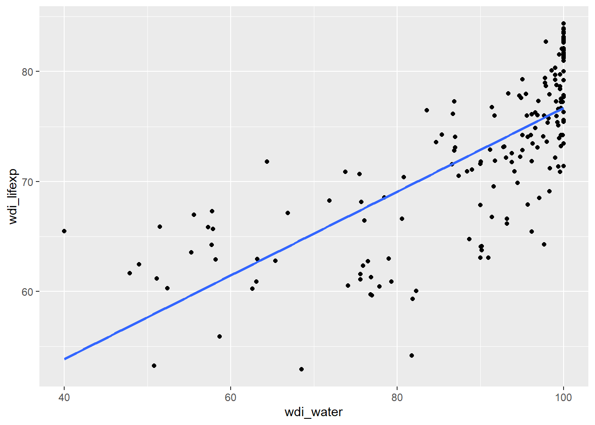
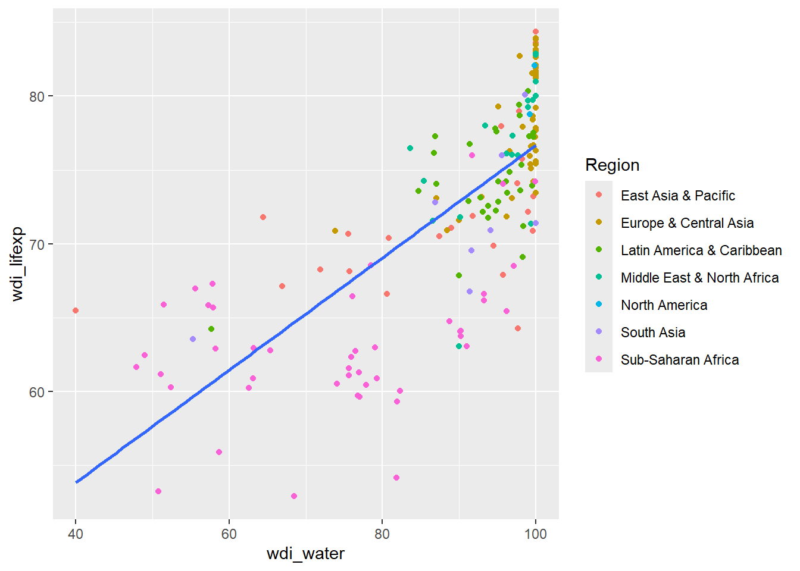
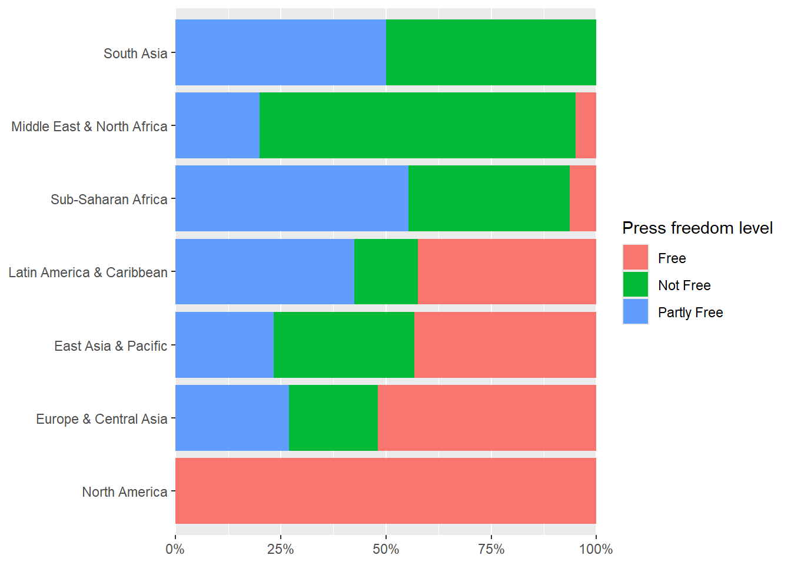

library(tidyverse)
library(haven)6 ISA 2: measures of dispersion and visualizing relationships
6.1 R outcomes
After reading this chapter, you can:
- Generate and interpret measures of dispersion
- Create and interpret scatterplots (interval/ratio data) and crosstabulations (nominal and ordinal data)
- Recode existing data into new variables using
dplyr::mutate
6.2 Required packages
You will need the following additional packages:
dplyr(but we will simply install thetidyversecollection so that we also have the pipe operator -%>%- loaded)haven
6.3 Open up your project and a new script file
You created a R project for your ISA work in the last class, so open this now and also create a new R script (Ctrl\Cmd + Shift + n) so that you can save today’s work.
6.4 Measures of dispersion
In this course, we will consider three measures of dispersion.
6.4.1 The standard deviation
The standard deviation is defined as:
\[ S = \sqrt\frac{\sum_{i=1}^{n}{(x_i-\bar{x})^2}}{n-1} \]
Computation of the standard deviation involves:
- Calculating the sample mean \(\bar{x}\)
- Subtracting \(\bar{x}\) from each “raw” value of \(x\) to compute deviations
- Squaring the deviations from step 2 \((x_i - \bar{x})^2\)
- Summing the deviations \(\sum_{i = 1}^{n}\)
- Dividing the deviations by the number of observations (\(n\)) minus 1
- Taking the square root of 5
The standard deviation can be roughly interpreted as the average deviation from the sample mean in the data. Much like the mean, this measure of dispersion is mot appropriate for interval/ratio level data.
6.4.2 The range
The range is simply the difference between the maximum and minimum values in the data, and can be written as:
\[ range = max(x_1, x_2, ..., x_n) - min(x_1, x_2, ..., x_n) \]
6.4.3 The interquartile range (IQR)
This represents the spread of the middle 50% of the data and is calculated as:
\[ IQR = Q_3 - Q_1 \]
\(Q_3\) and \(Q_1\), are, respectively, the 75th and 25th percentiles of the data.To find these for data \(x\) with \(n\) elements:
\(Q_1(x) = x_{(\frac{n+1}{4})}\)
\(Q_3(x) = x_{(\frac{3(n+1)}{4})}\)
Where the position index for the quartile is not a whole number, we can average the values from the two nearest whole number positions to find our quartile. For example, for data with \(n = 100\):
- \(Q_1(x) = x_{(\frac{101}{4})} = 25.25\)
In the above case, we would average the 25th- and 26th-ranked values of \(x\) to find \(Q_1(x)\).
6.5 Measures of dispersion in R
Let’s load in the World Data Indicators (WDI) dataset (World_Data.sav), where the cases (rows) are individual countries. We will then pick out the variable wdi_internet whose label we can print with the function attibutes, without having to print every value.
wd<-haven::read_sav("World_Data.sav")
attributes(wd$wdi_internet)$label[1] "Individuals using the Internet (% of population)"As you can see, this variable shows the percentage of individuals using the internet as percentage of population. We can will use summary to display some measures of central tendency:
summary(wd$wdi_internet) Min. 1st Qu. Median Mean 3rd Qu. Max. NA's
1.309 32.825 63.864 57.301 81.716 99.701 4 (Along with these, we can see that four countries had NA values for this variable. We need to bear this in mind as we go further, because R will try to get answers out of NA entries where no answers are to be had.)
6.5.1 The standard deviation
sd(wd$wdi_internet, na.rm = TRUE)[1] 28.26493(The na.rm = TRUE argument above tells R to remove any values of NA before performing the requested operation.)
6.5.2 The range
range(wd$wdi_internet, na.rm = TRUE)[1] 1.308907 99.701492While the function runs, it actually returns the minimum and maximum values of the dataset, rather than the difference between them. We can add some extra code to calculate this:
range(wd$wdi_internet, na.rm = TRUE)[2] - range(wd$wdi_internet, na.rm = TRUE)[1] [1] 98.39259This tells R to subtract the first output argument from the range function (the minimum value) from the second output (the maximum value).
6.5.3 The interquartile range
You likely noticed that the summary function produces quartiles 1 and 3, so we could calculate the IQR from these. However, if we are feeling lazy, there is an existing function which will do this for us:
IQR(wd$wdi_internet, na.rm=TRUE)[1] 48.890986.6 Visualizing relationships between variables
6.6.1 Scatterplots
Scatterplots are useful for visualizing relationships between interval/ratio variables. In this course, our convention will be to place independent variables (IVs) on the x-axis and dependent variables (DVs) on the y-axis.
Note 6.1: IVs and DVs
An independent variable is the presumed cause of effects on a dependent variable. See the lecture notes for further information.
The variables wdi_lifexp (life expectancy at birth) and wdi_water (percentage of population with access to improved water) are appropriate for scatterplotting, so we will submit these to ggplot2::geom_point. If there is a causal relationship between these two variables, then the most intuitive direction of influence would be from wdi_water to wdi_lifexp, so we wdi_water will be our IV (x-variable) and wdi_lifexp our DV (y-variable).
wd %>%
ggplot2::ggplot(ggplot2::aes(x = wdi_water, y = wdi_lifexp)) +
ggplot2::geom_point()
We can see a noisy, yet positive relationship between a country’s percentage access to an improved water source and its life expectancy at birth. With ggplot2 we can also run a linear model on data and plot the fit line:
wd %>%
ggplot2::ggplot(ggplot2::aes(x = wdi_water, y = wdi_lifexp)) +
ggplot2::geom_point() +
ggplot2::geom_smooth(method = "lm", se = FALSE)

We could add country labels to the points to tell us more about the relationship, but, with so many points, the labels would become unreadable. Instead, we can take the region variable and use this to colour-code clusters of points, like so:
wd %>%
dplyr::mutate(Region = haven::as_factor(region)) %>%
dplyr::filter(!is.na(Region)) %>%
ggplot2::ggplot(ggplot2::aes(x = wdi_water, y = wdi_lifexp)) +
ggplot2::geom_point(ggplot2::aes(colour = Region)) +
ggplot2::geom_smooth(method = "lm", se = FALSE)

Overall, there is a positive relationship between access to water and life-expectancy, but you can see that its strength varies across different regions of the world. To add yet another dimension, you can visualize the relationship within regions:
wd %>%
dplyr::mutate(Region = haven::as_factor(region)) %>%
dplyr::filter(!is.na(Region)) %>%
ggplot2::ggplot(ggplot2::aes(x = wdi_water, y = wdi_lifexp, colour = Region)) +
ggplot2::geom_point() +
ggplot2::geom_smooth(method = "lm", se = FALSE)
6.6.2 Crosstabulations
Crosstabulations (crosstabs) are a useful method for visualizing relationships among combinations of ordinal and nominal-level variables with relatively few unique categories. For example, let’s imagine we are interested how freedom of the press varies across countries in different regions of the world. In the WDI, we can examine this with the variables region and fhp_status5 (freedom of the press score, as rated by Freedom House). region is measured at the nominal level (as we cannot rank regions based on name alone), where fhp_status5 has ranks press freedom from 1 (“Free”) to 3 (“Not Free”).
A simple crosstab will show us the number of countries within regions which fall into the different categories of press freedom, and also give us the marginal counts1 On this course, our convention will be to place IVs in the columns and DVs in the rows, so our most logical approach would be to place region in the columns and fhp_status5 in the rows. This allows us to see how the distribution of counts across the levels of press freedom (the DV) vary across the different regions (the IV). In other words, we compare counts horizontally, between different regions.
There are many good existing R functions that we can use to generate crosstabs, but we will again use a custom function. quickxtab produces a crosstab and adds the marginal counts for a chosen dimension. Here we create both column totals which are collapsed across regions, and row totals which are collapsed across categories of press freedom, and we wrap the output in the knitr::kable function which we have seen previously.
source("customFunctions")
knitr::kable(quickxtab(haven::as_factor(wd$fhp_status5),haven::as_factor(wd$region)), digits = 2, align = "c")| East Asia & Pacific | Europe & Central Asia | Latin America & Caribbean | Middle East & North Africa | North America | South Asia | Sub-Saharan Africa | Total | |
|---|---|---|---|---|---|---|---|---|
| Free | 13 | 27 | 14 | 1 | 2 | 0 | 3 | 60 |
| Partly Free | 7 | 14 | 14 | 4 | 0 | 4 | 26 | 69 |
| Not Free | 10 | 11 | 5 | 15 | 0 | 4 | 18 | 63 |
| Total | 30 | 52 | 33 | 20 | 2 | 8 | 47 | 192 |
While we can see trends, it is more informative to view the press freedom category counts as percentages within countries. This adjusts for differences in the number of countries within regions and shows us the proportional distribution of counts for the freedom categories. The prop.table can be used to transform our count table into proportions along a chosen dimension. We set margin = 2 as we want to convert counts to proportions within columns, the second dimension of the table. Multiplying by 100 converts proportions to percentages, but, because we request both row and column totals from quickxtab, when these are passed into prop.table the column percentages we requested are halved, and we must multiply by 200 to return the correct values.
knitr::kable(prop.table(quickxtab(haven::as_factor(wd$fhp_status5),haven::as_factor(wd$region)),margin = 2)*200, digits = 2, align = "c") | East Asia & Pacific | Europe & Central Asia | Latin America & Caribbean | Middle East & North Africa | North America | South Asia | Sub-Saharan Africa | Total | |
|---|---|---|---|---|---|---|---|---|
| Free | 43.33 | 51.92 | 42.42 | 5 | 100 | 0 | 6.38 | 31.25 |
| Partly Free | 23.33 | 26.92 | 42.42 | 20 | 0 | 50 | 55.32 | 35.94 |
| Not Free | 33.33 | 21.15 | 15.15 | 75 | 0 | 50 | 38.30 | 32.81 |
| Total | 100.00 | 100.00 | 100.00 | 100 | 100 | 100 | 100.00 | 100.00 |
6.6.3 Barcharts for proportions
We can also use stacked barcharts to visualize percentage or proportion differences, to complement crosstabs.
as.data.frame(prop.table(table(haven::as_factor(wd$fhp_status5),haven::as_factor(wd$region)),margin = 2)*100) %>%
ggplot2::ggplot(ggplot2::aes(x = Var2, y = Freq, fill = Var1)) +
ggplot2::geom_bar(stat = "identity") +
ggplot2::coord_flip() +
ggplot2::scale_y_continuous(expand = c(0,0),labels = scales::label_percent(scale = 1, accuracy = 1)) +
ggplot2::labs(fill = "Press freedom level") +
ggplot2::theme(
axis.title.x = ggplot2::element_blank(),
axis.title.y = ggplot2::element_blank()
)

6.7 Datawrangling skills: recoding variables
It may sometimes be necessary to add new variables to your dataset, or to transform existing ones. For example, in sec-mut1 we created a BMI variable from existing information about a person’s height and mass. In this example, we will look at the variable wd$wef_mobile which holds the number of mobile telephone subscriptions per 100 people for each country.
wd$wef_mobile [1] NA 123.66314 113.57871 131.93422 114.95461 NA NA
[8] 119.83760 139.20094 119.49152 NA 129.67279 51.86338 NA
[15] NA 133.17834 134.52600 NA 134.93196 110.12814 NA
[22] NA NA 145.70737 NA 180.18262 NA NA
[29] NA 147.19527 NA NA 94.17700 NA 121.25902
[36] 123.53527 103.92142 103.43883 118.11706 104.12563 NA 129.60948
[43] 100.93444 119.17389 129.32422 125.11896 115.87110 145.43843 132.18469
[50] 108.40813 117.54892 133.39757 115.66691 105.58346 103.44518 103.17105
[57] 126.13709 137.46695 141.96803 122.57011 NA 164.27902 132.16493
[64] 107.34892 NA 88.01395 98.45585 180.69382 120.62500 107.17371
[71] 134.74843 115.63621 116.24561 157.43130 NA 97.64591 132.80182
[78] 118.67422 125.12024 111.52817 NA 97.30133 122.55068 NA
[85] 132.09315 NA NA NA 100.81641 98.84350 122.57284
[92] 134.43732 129.90862 169.93069 NA NA 84.10208 92.32327
[99] NA 118.66708 NA 79.15031 57.52892 101.02653 NA
[106] NA 93.00775 115.09591 130.06845 123.75976 106.95258 146.91322
[113] NA 140.05675 149.90422 NA 71.76614 208.50484 133.34094
[120] NA 121.93248 95.28660 108.46239 NA 127.66187 87.62149
[127] 178.59059 64.49806 NA 124.17155 140.20393 133.36629 141.85582
[134] 122.57331 NA 127.70720 55.17502 89.23100 123.68756 NA
[141] 97.28119 NA 86.94257 115.06100 NA 139.44637 72.55706
[148] 43.13052 56.53471 82.38429 97.91227 150.00558 134.85796 69.08540
[155] 43.38221 NA NA 112.24072 NA 37.21807 138.28098
[162] 137.51717 96.11502 139.52902 NA NA 96.32021 NA
[169] 113.83052 40.57034 115.08467 47.71578 103.70605 151.35912 39.00579
[176] 112.70236 NA 88.18424 78.85411 NA 104.45064 NA
[183] NA NA NA 93.52732 184.29802 45.12374 NA
[190] 77.24136 57.27261 153.24991 89.15704 89.40487
attr(,"label")
[1] "Mobile-cellular telephone subscriptions/100 pop."
attr(,"format.spss")
[1] "F8.0"From this interval/ratio level variable, we will create ordinal categories using the base::cut function, as below:
wd$mobile_recode<-cut(x = wd$wef_mobile, breaks = c(0,50,100,150,max(wd$wef_mobile,na.rm=TRUE)), labels = FALSE)We supply our input data via the x, we give our category breakpoints with breaks, and we set labels to FALSE which means that R will give us simple numerical labels for the output. We request here bins of values from 0 up to to and including 50, from greater than 50 up to and including 100 … and so on, up to the maximum value in wef_mobile. This function also automatically leaves any NA as they are, so we do not need to provide any extra input to handle these.
We can compare these variables side-by-side to check that our recode worked as intended:
wd %>%
dplyr::select(wef_mobile, mobile_recode) %>%
print(., n = 25) # use this to show more than the default 10 rows of the data after the selection # A tibble: 194 × 2
wef_mobile mobile_recode
<dbl> <int>
1 NA NA
2 124. 3
3 114. 3
4 132. 3
5 115. 3
6 NA NA
7 NA NA
8 120. 3
9 139. 3
10 119. 3
11 NA NA
12 130. 3
13 51.9 2
14 NA NA
15 NA NA
16 133. 3
17 135. 3
18 NA NA
19 135. 3
20 110. 3
21 NA NA
22 NA NA
23 NA NA
24 146. 3
25 NA NA
# ℹ 169 more rows6.8 Summary
In this chapter, we covered:
- Calculating measures of dispersion
- Visualizing relationships for data at various measurement levels
- Recoding existing variables into new ones
That is, the counts in the categories of one variable when we ignore the levels of the other.↩︎